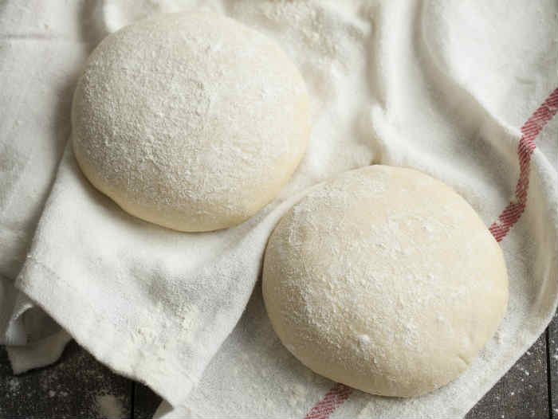

pizzadough recipe

Description
Today we will make quick and easy pizzadough. This pizzadough is a great start to making your own delicious pizza from scratch!.
Ingredient list
- 500 grams of flower
- 0,5 spoons of salt
- 1 7 grams packet of dry yeast
- 0,5 teaspoons of sugar
- 325 ml of lukewarm water
Cooking steps
- Disolve the sugar in the water and add the yeast. When everything is well mixed, let it rest for 15 minutes.
- Mix the flower with the salt. Add the yeast mixture and knead till you have one homogenous mass. Knead for at least 10 minutes.
- Make two balls from the dough for two large pizzas. You can also make three or four smaller pizzas.
- Let the doughballs rest for 15 minutes.
- Flatten the doughballs and put them on a pizza form or a cast iron pann.
- You are now ready to finish your pizza!